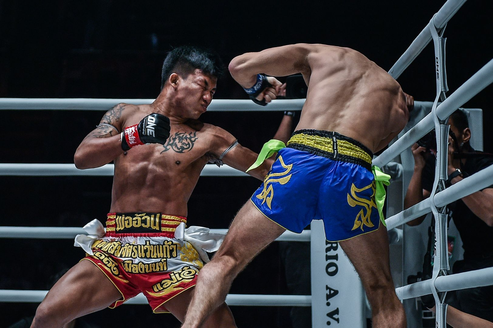

Jesper Asplund
Jesper Asplund TE21A
Information om eleven Jesper Asplund, hans hobbys, hans träning, osv.
Sport
Hobby
Favoritspel

Jesper har tränat thai boxning eller "muay thai" i 1.5 år. Han skulle haft sin första tävling den 3 september i viktklassen 71kg men tyvär hittades ingen moståndare. Han tränar på klubben "Stockholm Muay Thai" och ska strax ner till viktklassen 67kg för att tävla. Jesper tar stor inspiration i sin fightstyle från Rodtang (världsmästaren i OneChampionship)